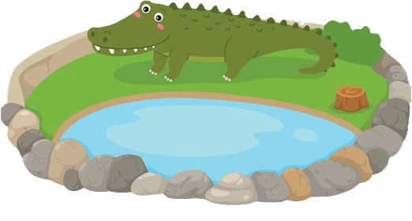

Uso de IA no Processo de Desenvolvimento
Como usar IA para acelerar entregas, melhorar produtividade e manter controle técnico no desenvolvimento de software.
Sobre o palestrante
Sou Tech Lead e Engenheiro de Software Full Stack com mais de 10 anos de experiência em SaaS, Dados e Inteligência Artificial.
Atuo com tecnologias como Laravel, Next.js, ClickHouse e FastAPI, liderando equipes de desenvolvimento e iniciativas de automação assistida por IA.
Atualmente desenvolvo soluções modernas utilizando LLMs e AI-assisted development para acelerar entregas, aumentar produtividade e transformar o processo de desenvolvimento de software.
1. Objetivo
Ver como usar IA para acelerar o desenvolvimento sem perder controle técnico, tratando a ferramenta como apoio ao raciocínio, planejamento e execução.
A palestra mostra como sair do uso genérico de chat e começar a usar IA como parte real do processo de desenvolvimento: entender o problema, planejar, construir, revisar e ajustar.
2. IA é Excel 2.0
| Excel | IA |
|---|---|
| Automatizou cálculos | Automatiza raciocínios e tarefas |
| Não substituiu analistas | Não substitui bons desenvolvedores |
| Exige conhecimento para uso avançado | Exige contexto, restrições e revisão |
| Pode gerar erro se mal usado | Pode gerar código errado se mal usado |
| Quem usa IA sem critério | Quem usa IA bem |
|---|---|
| Pede qualquer coisa e aceita a resposta | Define contexto, objetivo e restrições |
| Copia código sem entender | Revisa, testa e ajusta |
| Deixa a IA decidir arquitetura | Usa a IA como apoio técnico |
| Aumenta risco | Aumenta produtividade |
3. Conceitos rápidos
| Conceito | Explicação |
|---|---|
| IA | Sistema capaz de executar tarefas que normalmente exigiriam inteligência humana. |
| LLM | Modelo de linguagem capaz de entender e gerar texto, código e instruções. |
| Contexto | Informações que ajudam a IA a entender a tarefa. |
| Restrições | Limites que impedem a IA de resolver do jeito errado. |
| Token | Unidade de texto processada pelo modelo. |
4. API Key vs plano mensal
| Critério | API Key | Plano mensal |
|---|---|---|
| Como funciona | Você cria uma chave e paga conforme o consumo. | Você paga um plano e usa dentro de uma cota. |
| Melhor para | Produtos, integrações e automações. | Uso individual, estudo e produtividade. |
| Controle técnico | Alto. | Menor. |
| Risco de custo | Pode crescer se não monitorar. | Mais previsível. |
| Atenção principal | Proteger a API Key e monitorar consumo. | Entender limites por plano, modelo e período. |
5. O que a IA faz bem, faz mal e os riscos
| A IA faz bem | A IA faz mal |
|---|---|
| Explicar código | Entender regra de negócio incompleta |
| Criar primeira versão e boilerplate | Garantir que o código está correto |
| Criar testes simples | Tomar decisões de arquitetura sozinha |
| Ajudar no debug | Proteger dados sensíveis sem orientação |
| Comparar abordagens | Substituir revisão humana |
| Tipo de risco | Exemplos |
|---|---|
| Técnico | Código errado, dependência desnecessária, arquitetura ruim. |
| Segurança | Vazamento de API Key, dados sensíveis, código inseguro. |
| Processo | Falta de teste, mudança de escopo, falsa produtividade. |
6. Antes e depois da IA
A IA não muda o que precisa ser feito. Ela muda a velocidade com que conseguimos chegar em uma primeira versão.
| Antes da IA | Com IA |
|---|---|
| Mais tempo pesquisando documentação | Mais tempo validando soluções |
| Mais boilerplate manual | Mais geração assistida |
| Debug mais solitário | Debug com hipóteses rápidas |
| Documentação manual | Primeira versão de documentação |
| Revisão individual | Revisão assistida |
7. Coding agents
Codex, Claude Code e OpenCode são ferramentas diferentes, mas cumprem a mesma função principal: trazer a IA para dentro do projeto.
| O agente pode fazer | Exemplo |
|---|---|
| Ler arquivos | Entender estrutura do projeto |
| Editar código | Alterar HTML, CSS, JS, backend ou testes |
| Criar arquivos | Criar componentes, services, testes ou páginas |
| Rodar comandos | Executar build, lint ou testes |
| Corrigir erros | Ler terminal e propor ajustes |
| Trabalhar por etapas | Planejar primeiro, executar depois |
| Agente mal guiado | Agente bem guiado |
|---|---|
| Altera arquivos demais | Atua dentro do escopo |
| Cria código complexo | Mantém simplicidade |
| Adiciona bibliotecas desnecessárias | Respeita restrições |
| Resolve o problema errado | Segue objetivo claro |
8. Plan vs Build
Build = mexer depois de aprovar.
| Ordem | Ação |
|---|---|
| 1 | Peça o PLAN |
| 2 | Leia e ajuste o plano |
| 3 | Aprove a direção |
| 4 | Peça o BUILD |
| 5 | Teste e peça ajustes pontuais |
9. Preparando o projeto para IA: Markdown e Skills
Para usar IA em projetos reais, não basta abrir o agente e pedir código. O agente precisa entender o projeto, os padrões do time e os limites da tarefa.
Markdown como contexto do projeto
Arquivos .md funcionam como instruções permanentes para o agente. Eles evitam repetir o mesmo contexto em todo prompt.
| Arquivo | Função |
|---|---|
README.md | Explica o projeto para humanos. |
CLAUDE.md | Orienta o Claude Code. |
AGENTS.md | Orienta Codex, OpenCode e outros agentes. |
| Documentações internas | Explicam arquitetura, domínio, decisões e padrões. |
CLAUDE.md e AGENTS.md explicam o projeto para agentes de IA.
O que colocar nesses arquivos?
Skills
Skills são instruções reutilizáveis para ensinar o agente a trabalhar melhor em uma tarefa, stack ou processo.
| Skill | Uso |
|---|---|
| Laravel | Controllers, Services, Requests, migrations e testes. |
| Next.js | Componentes, rotas, hooks e padrões de frontend. |
| Testes | Testes unitários, integração e cobertura. |
| Segurança | Evitar vazamento de dados e más práticas. |
| Refatoração | Melhorar código sem alterar comportamento. |
| Documentação | Explicar decisões, fluxos e funcionalidades. |
O skills.sh funciona como um diretório de Skills prontas para agentes de IA. A ideia é reutilizar boas instruções em vez de escrever tudo manualmente em cada prompt.
Diferença prática
| Recurso | Melhor uso |
|---|---|
CLAUDE.md / AGENTS.md | Regras específicas do projeto. |
| Skills | Regras reutilizáveis para uma stack ou tarefa. |
| Prompt | Pedido específico da tarefa atual. |
Regra prática
| Para usar IA bem em projetos reais |
|---|
| O projeto precisa ter contexto. |
| O agente precisa ter regras. |
| A tarefa precisa ter escopo. |
| O resultado precisa ser revisado. |
Sem isso, a IA vira apenas um gerador de código genérico. Com isso, ela vira uma ferramenta real de produtividade para o time.
10. Como usar IA para programar
Agora que o projeto está preparado, entra a parte mais importante: saber pedir.
| Jeito fraco | Jeito melhor |
|---|---|
| “Crie um sistema completo para mim” | “Este é o contexto, este é o objetivo, estas são as restrições” |
| Escopo aberto demais | Escopo claro |
| Código genérico | Código direcionado |
| Pouco controle | Plano antes da execução |
Dinâmica: o jacaré e a lagoa
Pergunta para a plateia: Como fazemos um jacaré chegar até a lagoa?

| Pergunta | Por que importa? |
|---|---|
| O jacaré existe? | Valida o ponto de partida |
| Onde está o jacaré? | Define posição inicial |
| Onde está a lagoa? | Define destino |
| Existem obstáculos? | Define restrições |
| Como sabemos que ele chegou? | Define critério de conclusão |
Revelar prompt detalhado do jacaré
Quero que você resolva uma tarefa de forma extremamente detalhada e passo a passo. Tarefa: Fazer um jacaré chegar até uma lagoa. Antes de dar a resposta final, crie um checklist inicial validando as condições: 1. O jacaré existe? 2. O jacaré está vivo? 3. O jacaré consegue se movimentar? 4. O jacaré tem olhos? 5. O jacaré consegue enxergar a lagoa? 6. A lagoa existe? 7. A lagoa está visível? 8. Existe um caminho entre o jacaré e a lagoa? 9. Existe algum obstáculo no caminho? 10. O terreno permite que o jacaré ande? 11. Qual é a distância aproximada entre o jacaré e a lagoa? 12. Como saberemos que o jacaré chegou na lagoa? Depois do checklist, escreva mais de 10 passos para executar a tarefa. Os passos devem ser objetivos, sequenciais e fáceis de entender. Por fim, crie um desenho simples em ASCII mostrando: - O jacaré. - O caminho. - A lagoa. - A direção do movimento.
Prompt fraco vs prompt melhor
Faz uma página de anime.
Quero criar um projeto simples em HTML, CSS e JavaScript. O projeto será: Portfolio de Anime. O escopo é: - Criar apenas uma página inicial. - Mostrar 5 animes na página principal. - Ao clicar em um anime, mostrar os detalhes dele na própria página, usando JavaScript, HTML e CSS. - O código deve ser simples e fácil de entender para alunos iniciantes. Quero que você me ajude com: 1. Organização de arquivos e pastas 2. Tema visual 3. Lista de animes com 30 animes populares 4. Estrutura da página inicial 5. Estrutura da página de detalhes do anime
11. Prática: Portfolio de Anime
Na prática, vamos criar uma página simples usando IA em três etapas: planejar, construir e ajustar.
Prompt para PLAN
Quero criar um projeto simples em HTML, CSS e JavaScript. O projeto será: Portfolio de Anime. O escopo é: - Criar apenas uma página inicial. - Mostrar 5 animes na página principal. - Ao clicar em um anime, mostrar os detalhes dele na própria página, usando JavaScript, HTML e CSS. - O código deve ser simples e fácil de entender para alunos iniciantes. Quero que você me ajude com: 1. Organização de arquivos e pastas 2. Tema visual 3. Lista de animes com 30 animes populares 4. Estrutura da página inicial 5. Estrutura da página de detalhes do anime Importante: - Não crie código ainda. - Não crie arquivos ainda. - Apenas planeje comigo.
Prompt para BUILD
Execute o planejado adicionando comentários para facilitar o entendimento com código simples para alunos.
Prompts de ajuste
12. Perguntas e fechamento
A IA não deve ser tratada como mágica. Ela deve ser tratada como ferramenta.
A IA é um Excel 2.0: quem sabe usar ganha produtividade; quem não sabe usar apenas gera respostas bonitas sem controle técnico.